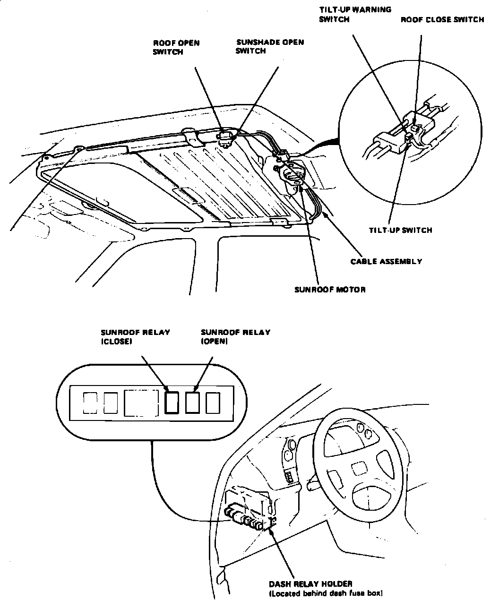

Operation CHARM
: Car repair manuals for everyone.
Home
>>
Acura
>>
1987
>>
Legend Sedan V6-2494cc 2.5L SOHC FI
>>
Repair and Diagnosis
>>
Body and Frame
>>
Sensors and Switches - Body and Frame
>>
Sunroof / Moonroof Switch
>>
Locations
>>
Sunshade Open Switch
Sunshade Open Switch
Sunroof Components.:

Above Headliner
Applicable to: 1987 Legend